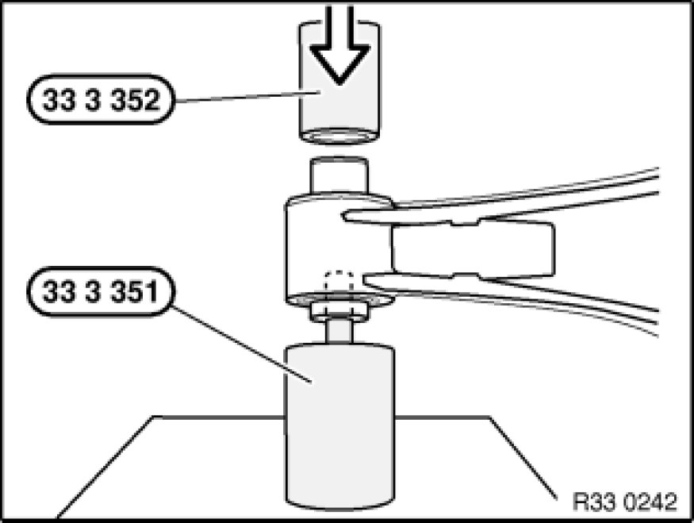
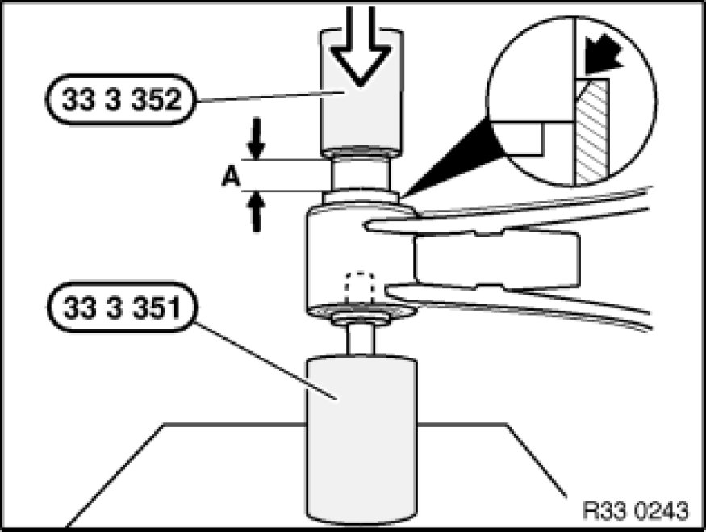

Replacing One Rubber Mount In The Upper Control Arm (Control Arm Removed)
33 32 671 - Replacing one rubber mount in the upper control arm (control arm removed)

Special tools required:
- 33 3 351 33 3 350 Set of Tools
- 33 3 352 33 3 350 Set of Tools

Press rubber mount with special tools 33 3 351 33 3 350 Set of Tools and 33 3 352 33 3 350 Set of Tools out of upper control arm.

Place new rubber mount at chamfered end of control arm bore. Here, longer collar (A = 17 mm) of rubber mount must point upwards.
Press in rubber mount with special tools 33 3 351 33 3 350 Set of Tools and 33 3 352 33 3 350 Set of Tools until flush.

After installation:
- Perform chassis alignment check